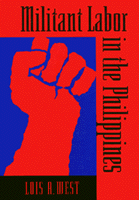

<body bgcolor="#FFFFFF" text="#000000" link="#0000FF" vlink="#CC0000" alink="#CC0000"><center><hr width="350" size="1" align="center" noshade>A comprehensive examination of the contemporary militant labor movement in the Philippines<hr width="350" size="1" align="center" noshade><p><a href="https://cdcshoppingcart.uchicago.edu/Cart/ChicagoBook.aspx?ISBN=9781566394918&&PRESS=temple" target="_top">Buy this book!</a> | <a href="https://cdcshoppingcart.uchicago.edu/Cart/Cart.aspx?PRESS=temple" target="_top">View Cart</a> | <a href="https://cdcshoppingcart.uchicago.edu/Cart/Cart.aspx?PRESS=temple" target="_top">Check Out</a></p><p></p></center><!--none//--><h1>Militant Labor in the Philippines</h1>
<h3>Lois A. West</h3>
<P>cloth 1-56639-491-0 $75.50, Apr 97, <FONT COLOR=#990033>Out of Stock Unavailable</FONT>
<BR> 256 pp
6x9
5&nbsp;tables 11&nbsp;halftones
</P><p>To what extent do&#151or should&#151labor unions agitate for bread-and-butter issues, and to what extent can they act as social movements, as agents of broad social change? In this detailed account, Lois A. West examines this question through a study of the Kilusang Mayo Uno (the KMU or May First Movement), the most militant contemporary labor movement in the Philippines.
<p>Using extensive interviews and first-hand observations, West traces the KMU's rise and eventual fragmentation in a time of economic and political crisis. During the 1980's, global capital restructuring began to have a tremendous impact on labor movements around the world. In developed regions like the United States, labor became demobilized. In developing countries like Poland, Brazil, South Africa, India, Chile, and the Philippines, working-class people who identified themselves as "militant" organized other workers, negotiated collective bargaining agreements, waged strikes, and struggled against the state. They formed alliances with community groups and established "solidarity networks" with other labor movements worldwide.
<p>This book follows the KMU in its attempt to navigate between reformist and revolutionary strategies. West analyzes the KMU's tactics and strategy and its effectiveness, including its grass-roots organizing, its appeal to women workers, and its ties to broader left-wing and nationalist social movements. She also lets participants describe their own activities and motivations: female bar workers talk about their 1987 strike to keep from being forced to take part in scantily dressed boxing matches; long-time trade unionists talk about fighting the Marcos regime; local KMU members talk about their reasons for joining the union. Through this interweaving of broad-scale analysis and human detail we learn to understand why some labor movements chose militancy at a moment when others were becoming more passive. This book is a must for students and scholars of social movements, social change, comparative labor movements, labor studies, development, political science, international relations, and Asian studies.
<BR>&nbsp;<h2>Reviews</h2>
<p>Read a <a href="../authors/974_review.pdf">review</a> from <I>The Journal of Asian Studies</I>, Volume 57.2 (May 1998), written by Jane Hutchison (pdf).
<BR>&nbsp;<h2>Contents</h2><P>
<p>Acknowledgments
<br>1. Militant Labor in Comparative Perspective
<br>2. The Raison d’Être: Culture or Economics?
<br>3. The Social Organization of the May First Movement
<br>4. The Women Worker’s Movement
<br>5. The Parameters of Reform
<br>6. Strikes as Labor Militancy
<br>7. Insurgency and Counterinsurgency
<br>8. The Struggle for an Epoch
<br>Notes
<br>Index
</P><BR>&nbsp;<H2>About the Author(s)</H2>
<P><B>Lois A. West </B>is Assistant Professor of Sociology and Women's Studies at Florida International University in Miami. She is co-author of <I>Wife Abuse in the Armed Forces </I>and editor of <I>Feminist Nationalism.</I></P>
<BR><H2>Subject Categories</H2>
<p><A HREF="/tempress/labor.html" TARGET="_top">Labor Studies and Work</a>
<BR><A HREF="/tempress/sociology.html" TARGET="_top">Sociology</a>
</p>
<p align="center"><a href="https://cdcshoppingcart.uchicago.edu/Cart/ChicagoBook.aspx?ISBN=9781566394918&&PRESS=temple" target="_top">Buy this book!</a> | <a href="https://cdcshoppingcart.uchicago.edu/Cart/Cart.aspx?PRESS=temple" target="_top">View Cart</a> | <a href="https://cdcshoppingcart.uchicago.edu/Cart/Cart.aspx?PRESS=temple" target="_top">Check Out</a></p><p><font face="Arial" size="1"><a href="copyright.html" onMouseOver="window.status='Web Copyright Policy';return true;" onMouseOut="window.status=''" title="Web Copyright Policy">&copy;</a> 2015 <a href="http://www.temple.edu" target="new" onMouseOver="window.status='Link to Temple University home page';return true;" onMouseOut="window.status=''" title="Link to Temple University home page">Temple University</a>. All Rights Reserved. http://www.temple.edu/tempress/titles/974_reg.html</font></p>